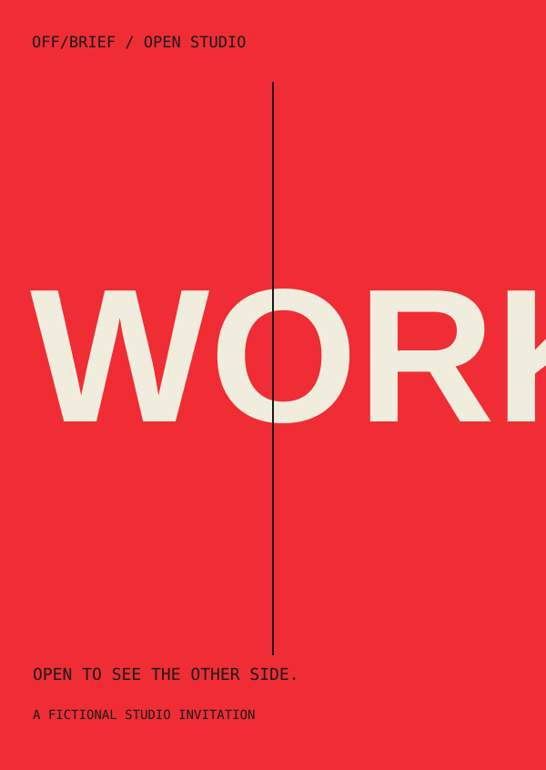

Typography
An outlined geometric wordmark gives the slash a physical job: it becomes the sleeve’s red release seam. Oversized editorial lettering breaks a single frame on the reverse.
Self-initiated fictional identity / 2026
A package with other plans.
An imaginary studio drink. A real exercise in turning one idea into a visual system.
Explore three applications ↓
The communication problem
Audience & direction
Independent brands, creative businesses and people who want an identity with a point of view.
The brief is a beginning, not a border. The can contains its own campaign: pull the seam, open the sleeve and discover the poster.
ob-01 / Can + double-sided sleeve
The sleeve gives the object its identity, then releases to reveal the campaign printed inside.


ob-02 / Campaign poster / 3:2
An oversized sentence crosses a precise boundary. The package’s reverse becomes a complete poster.

ob-03 / Gatefold studio invitation
WORK on the closed flaps becomes PLAY on the inside. The two physical states express one studio attitude.


Typography
An outlined geometric wordmark gives the slash a physical job: it becomes the sleeve’s red release seam. Oversized editorial lettering breaks a single frame on the reverse.
Colour
Dry charcoal and warm paper establish the structure. Red marks the opening; cyan and magenta separate the printed layers.
Composition
The cylindrical label, wide poster and folding invitation each have a different reading path. Complete words and quiet information zones keep the system usable.
Image making
Procedural aluminium and paper geometry, SVG artwork and locally rendered stills. No stock can photography or third-party brand graphics.
Mixture formula
Rejected direction
A cyan-all-over sleeve and a pale label were explored first. Both competed with the exposed metal; the charcoal sleeve reserves colour for the release mechanism and print details.
AI production disclosure
AI-assisted concept, copy, vector artwork and code. The object and material study were authored procedurally. OFF/BRIEF is a fictional identity, not a manufactured drink or a client commission.